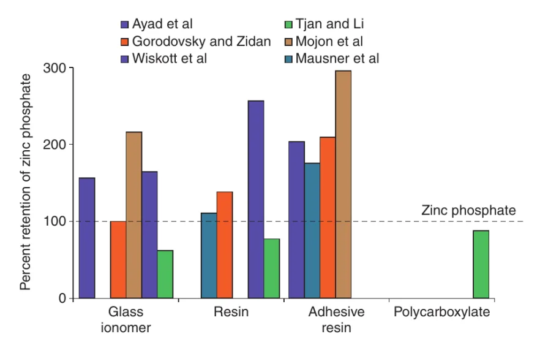

نسخه استخراجشده؛ ترجمه یا تأیید علمی انجام نشده است. وضعیت: captured
فسفات روی: «استحکام کافی، ضخامت فیلم حدود ۲۵ میکرومتر که در محدودهی تلورانس لازم برای ساخت ترمیمهای ریختگی است، و زمان کار معقول»؛ و «پس از سختشدن، مادهی اضافی بهآسانی با سوند یا اسکیلر تیز برداشته میشود».
دربارهی سمّیت: «اثرات سمی فسفات روی، یا دقیقتر اسید فسفریک، بهخوبی مستند است» اما «موفقیت سالیان دراز نشان میدهد اثرش بر پالپ بالینی قابلقبول است تا وقتی احتیاطهای معمول رعایت شود و تراش خیلی به پالپ نزدیک نباشد».
و تکنیک اختلاط: «اختلاط تدریجی ضروری است چون گرمای گرمازای حاصل از واکنش شیمیایی وگرنه باعث میشود مخلوط خیلی سریع ست شود»؛ برخی بالینکاران توصیه میکنند «اختلاط آهسته روی اسلب یخزده با واردکردن پودر به مایع در طی ۲ دقیقه در سطحی بزرگتر». و «وارنیش حفره میتواند پالپ را در برابر تحریک اسید فسفریک محافظت کند و به نظر میرسد اثر اندکی بر میزان گیر ترمیمهای سمانشده دارد». نکتهی مهم: «روکشهای سمانشده با فسفات روی، مقاومت بیشتری در برابر جابهجایی روی تراشهای فاقد فرم مقاومت نشان دادند».
پلیکربوکسیلات روی — سازگاری زیستی: «یک مزیت پلیکربوکسیلات روی، سازگاری زیستی نسبی آن است» که «ممکن است از این واقعیت ناشی شود که مولکول اسید پلیآکریلیک بزرگ است و بنابراین به درون توبول عاجی نفوذ نمیکند». و چسبندگی: «چسبندگی اختصاصی به ساختار دندان نشان میدهد چون کلسیم را کیلیت میکند (هرچند هیچ چسبندگی به ریختگیهای طلا ندارد)».
و پارادوکس رئولوژیک: با نسبت پودر به مایع توصیهشده، مخلوط «در آغاز کاملاً غلیظ است»؛ اما «خواص جریانی پلیکربوکسیلات با فسفات روی فرق دارد؛ پلیکربوکسیلات با افزایش نرخ برش نازک میشود» — یعنی «با وجود ظاهر غلیظ، توانایی ساخت ضخامت فیلم پایین را دارد». و هشدار: «وقتی دندانپزشک بیجهت نسبت پودر به مایع را کم میکند، انحلالپذیری سمان بهشدت — تا سه برابر — افزایش مییابد».
و محدودیتهای پلیکربوکسیلات: زمان کار ۲٫۵ دقیقه در برابر ۵ دقیقه فسفات روی — «که وقتی چند واحد سمان میشود میتواند مشکلساز باشد»، باقیماندهاش سختتر برداشته میشود، و شواهدی هست که «گیر کمتری از فسفات روی میدهد». پس انتخابش «احتمالاً باید به ترمیمهایی با گیر و مقاومت خوب محدود شود که در آنها تحریک حداقلی پالپ مطلوب است، مثلاً در کودکان با اتاقک پالپ بزرگ». و کنترااندیکاسیون قطعی: «بهخاطر تعامل شیمیایی میان پلیکربوکسیلات روی و تیتانیوم، هنگام سمانگذاری روکش ایمپلنت روی اباتمنت تیتانیومی کنترااندیکه است».

گلاسآینومر: «سمانی محبوب برای سمانگذاری ترمیمهای ریختگی شده است. خواص کاری خوبی دارد و از فسفات روی نیمهشفافتر است. سریعتر از فسفات روی ست میشود و بهآسانی مخلوط میشود».
و مسئلهی حساسیت — یک بازنگری مهم: «در سطح بافتشناسی پاسخ پالپی اندکی وجود دارد، بهویژه اگر ضخامت عاج باقیمانده از ۱ میلیمتر بیشتر باشد». عوارضی مانند حساسیت پس از درمان که گمان میرفت از ناسازگاری زیستی باشد، «ممکن است در واقع نتیجهی خشکشدن بیشازحد یا آلودگی باکتریایی عاج باشد نه تحریک توسط سمان». و «یافتههای حکایتی مبنی بر اینکه گلاسآینومر حساسیت بیشتری میسازد، در کارآزماییهای بالینی تکرار نشدهاند». پس اگر حساسیت پس از سمان مشکل شد، «دندانپزشک باید تکنیک خود را بهدقت ارزیابی کند، بهویژه پرهیز از خشککردن بیشازحد سطح عاج تراشخورده».
و دو هشدار دیگر: RMGI و رزینهای خودچسب حساسیت کمتری پس از درمان میسازند؛ مادهی دِسنسیتایز کننده ممکن است حساسیت را پیشگیری کند «هرچند ممکن است گیر را هم — دستکم با برخی سمانها — کاهش دهد»؛ و برخی فرمولاسیونهای گلاسآینومر و رزین رادیولوسنتاند، «که ممکن است بالینکار را از تشخیص خط سمان از پوسیدگی عودکننده و نیز از تشخیص اُورهنگ سمان بازدارد». و نکتهی مهم: «هر کاهشی در فعالیت پوسیدگی که از محتوای فلوراید انتظار میرفت، در پژوهش بالینی نشان داده نشده است».
زینکاکساید-اوژنول با و بدون EBA: ZOE تقویتشده «بینهایت سازگار با بافت است و سیل عالی فراهم میکند»، اما «خواص فیزیکیاش عموماً پایینتر از دیگر سمانهاست که کاربردش را محدود میکند» — از نظر استحکام فشاری، انحلالپذیری و ضخامت فیلم باید سمان دیگری به کار رود.
اصلاحکنندهی اسید اتوکسیبنزوئیک (EBA) بخشی از اوژنول را جایگزین میکند و «استحکام فشاری را بدون اثر بر مقاومت در برابر تغییرشکل بهبود میدهد»؛ کاربردش تنها در «ترمیمهایی با فرم گیر ذاتی خوب که تأکید بر سازگاری زیستی و محافظت پالپ است». و «زمان کار نسبتاً کوتاهی دارد و مادهی اضافی بهسختی برداشته میشود».
RMGI: «در دههی ۱۹۹۰ معرفی شدند در تلاشی برای ترکیب برخی خواص مطلوب گلاسآینومر — یعنی رهایش فلوراید و چسبندگی — با استحکام بالاتر و انحلال کم رزینها». امروزه «در میان محبوبترین عوامل چسبانندهاند: انحلالپذیری کم، چسبندگی، و نرخ پایین ریزنشت».
و صریحترین جمعبندی دربارهی سمانها: عامل چسبانندهی آرمانی زمان کار طولانی دارد، به دندان و مواد ترمیمی خوب میچسبد، سیل خوبی میدهد، برای پالپ غیرسمی است، استحکام کافی دارد، به لایههای نازک فشرده میشود، ویسکوزیته و انحلال کم دارد، و اضافهاش بهآسانی برداشته میشود — «متأسفانه چنین محصولی وجود ندارد».